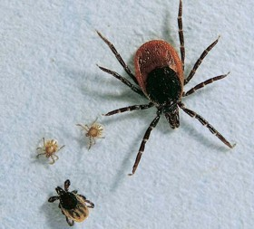

Sie sind nicht nur faszinierende Lebewesen, sondern auch gefährliche Parasiten: Zecken können tödliche Krankheiten übertragen. Aber wer gut informiert ist, kann das Risiko minimieren
Die Gefahr lauert im Gras: Nur millimetergro�e Gliederfü�er entern während des Picknicks unseren Körper. Sie wollen unser Blut. Bleiben sie unbemerkt, ritzen sie mit ihren sägeartigen Kieferwerkzeugen einen Spalt in die oberste Hautschicht, betäuben mit giftigem Speichel die Wunde und senken den Saugrüssel bis zum Anschlag hinein. �ber Stunden oder Tage können Zecken-Weibchen bis auf das 200-fache ihres ursprünglichen Gewichts anwachsen.
Rund 850 Arten dieser Blut saugenden Spinnentiere sind weltweit bekannt. Während viele Arten auf bestimmte Tierarten fixiert und damit für den Menschen ungefährlich sind, ist der Gemeine Holzbock, Ixodes ricinus, der in Deutschland verbreitet vorkommt, flexibel: Auch Menschenblut schmeckt ihm.
Im Gegensatz zu manchen ihrer farbenfrohen tropischen Verwandten ist diese Art unscheinbar - im eigenen Interesse, denn für die Parasiten hängt das �berleben davon ab, dass sie sich ungestört an ihrem Wirt laben können.
Drei Mahlzeiten reichen einer Zecke für ein ganzes Leben. Die nur einen halben Millimeter gro�e Larve des Gemeinen Holzbocks befällt zunächst einen Kleinsäuger. Dank dieser Blut-Mahlzeit kann sie heranwachsen - sie häutet und entwickelt sich zur geschlechtslosen Nymphe. Nun sucht sie ein weiteres, grö�eres Opfer. Mit dem Ertrag dieses �berfalls wächst sie endlich zum erwachsenen, geschlechtsreifen Tier heran.
Eine letztes, opulentes Mahl nehmen die Weibchen zu sich, um ihre 2000 bis 3000 Eier produzieren zu können. Nach der Eiablage stirbt das Weibchen. Auch für die Männchen markiert der Höhepunkt ihres Lebens zugleich sein Ende: Nach der Kopulation haben Zeckenmännchen fertig. Den Wirt befallen sie nur in der Hoffnung, auf ein geschlechtsreifes Weibchen zu treffen. Ob sie unterdessen noch Blut saugen, ist nicht bekannt. Rund drei bis fünf Jahre braucht eine Zecke zur Vollendung ihres Lebenszyklus'.